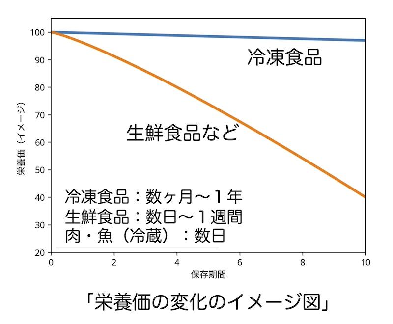

公開日：2026年5月｜最終更新：2026年5月
食品には、賞味期限と消費期限という２つの食品表示法があります。
賞味期限とは、「おいしく食べられる品質が保たれる期限」を意味し、品質（味・食感）が徐々に落ちる可能性があるという意味です。
消費期限は、弁当や生菓子、惣菜など「痛みやすい食品」に使われ、期限を過ぎると、食べない方が賢明です。
冷凍食品は、低温保存であるため、通常は、賞味期限表示です。
また、冷凍保存は、「栄養を比較的よく保つ保存方法の一つ」です。
冷凍食品を利用する際に、多くの人が気になるのは、「賞味期限」と「栄養価」です。
| 食品 | 賞味期限の目安 |
|---|---|
| 冷凍野菜 | 約１年 |
| 冷凍魚 | ６ヶ月〜１年 |
| 冷凍惣菜 | ６ヶ月〜１年 |
| 冷凍うどん | 約１年 |
ため、品質は少し早く落ちるようです。
家庭では、「表示期限よりもやや早めに食べる」のが良いとされています。
目安としては、
が無難です。
「冷凍しても栄養価はほとんど落ちない」という点は、科学的にもほぼ共通した理解です。
冷凍食品については、「栄養価が低いのではないか」というイメージを持つ人も少なくありません。
しかし実際には、「冷凍保存は栄養を保つ優れた保存方法」とされています。
食品を冷凍すると、水分が氷になり、微生物の活動や化学反応が大きく低下します。
家庭用の冷凍庫や市販の冷凍食品は、通常「−18℃以下」で保存されます。
この温度では
が大きく抑えられます。
そのため、「栄養成分は比較的よく保たれる」とされています。

肉や魚に含まれるたんぱく質は、冷凍による影響が非常に少ない栄養素です。
冷凍保存しても「たんぱく質量」「アミノ酸組成」はほとんど変化しません。
したがって
などは、「たんぱく質の供給源」として十分利用できます。
魚に含まれる
などの脂肪酸も、冷凍保存では大きく減少することはありません。
ただし長期間保存すると、脂質の酸化が少しずつ進むことがあります。
このため、「賞味期限内に食べることが大切」です。
ビタミンは種類によって影響が異なります。
一般に
などの脂溶性ビタミンは、冷凍の影響を受けにくいとされています。
一方
などはやや減少することがありますが、通常の保存期間では大きな栄養低下にはなりません。
市販の冷凍野菜は、収穫後すぐに加工されることが多く、「洗浄」「下処理」「急速冷凍」という工程で作られます。
そのため場合によっては、「長期間保存された生野菜より栄養が保たれていることもあります。」
例えば
などでは、このような例が報告されています。
このように、冷凍保存では
が比較的よく保たれます。
冷凍保存は、食品を長期間保存する方法の中でも、栄養を比較的よく保つ方法の一つです。
そのため冷凍食品は、「栄養価が低い食品ではなく、栄養を保ったまま保存する方法」と考えることができます。
冷凍食品については、「栄養価が低い」というイメージがありますが、科学的にはそのようなことはありません。
むしろ冷凍保存は、「栄養を比較的よく保つ保存方法の一つ」です。
冷凍食品を上手に利用することで、日常の食事の栄養バランスを保つことができます。
冷凍食品は、「手軽で栄養も保たれる便利な食品」と言えるでしょう。
本稿では、冷凍食品と高齢者の栄養について
①低栄養と冷凍食品について
②おすすめの冷凍食品について
③賞味期限と栄養価について
の３回に分けて解説しました。
冷凍食品は、上手に利用すれば高齢者の栄養を支える便利な食品の一つといえるでしょう。
参考文献
※本ページは公的機関および学会の情報をもとに作成しています。